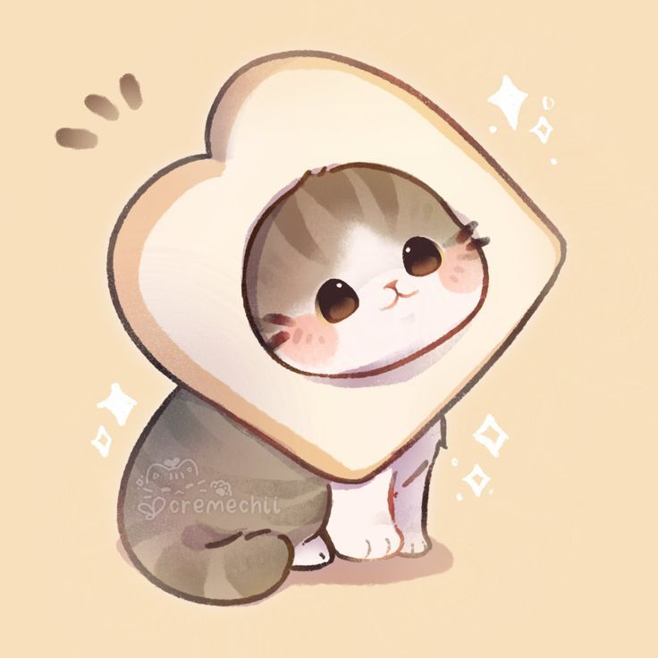

Alondra Antonela Gonzales Varillas
Alondra Antonela Gonzales Varillas,Sé que estarás leyendo esto y quiero que sepas que me gustas mucho más de lo que las palabras pueden expresar. Te amo con todo mi corazón y estoy dispuesto a darlo todo por ti. Aunque esta página no sea la más elaborada, espero que puedas sentir con cada palabra cuánto te amo y lo importante que eres para mí. Cada día a tu lado es un regalo, y este mensaje es solo una pequeña muestra de lo profundo que es mi amor por ti....
Alondra Antonela Gonzales, mujer hermosa y bella, eres la luz que ilumina mi vida con cada sonrisa y cada gesto. Desde el momento en que te conocí, supe que había encontrado a alguien verdaderamente especial. Tu belleza no solo brilla en tu apariencia, sino en la forma en que amas y te preocupas por los demás.
Cada día contigo es un regalo que atesoro profundamente. Tu amor y tu ternura llenan mi corazón de una alegría que nunca imaginé que podría experimentar. Eres el sueño hecho realidad que esperaba, y cada momento a tu lado es un capítulo perfecto en nuestra historia juntos.
Tu capacidad para ver lo mejor en cada situación y tu habilidad para hacer que cada día sea especial me inspiran a ser una mejor persona. En tu compañía, he encontrado no solo el amor, sino también una amistad sincera y un apoyo incondicional.
Alondra, quiero que sepas que te amo más de lo que las palabras pueden expresar. Eres mi compañera, mi confidente y mi mayor fuente de felicidad. A través de cada desafío y cada alegría, estoy agradecido por tenerte a mi lado. Prometo amarte y valorarte siempre, y espero que podamos seguir creando juntos recuerdos maravillosos.
Con todo mi amor y cariño,
Hamilton.
Eres la razón de mis sonrisas y la luz de mis días. Cada momento contigo es un tesoro que guardo en mi corazón, y tu amor me impulsa a seguir adelante.
Cada vez que te veo, mi corazón late más rápido. Eres mi inspiración y mi refugio, y cada día a tu lado es un regalo que valoro profundamente.
"Desde el momento en que te conocí, supe que había encontrado a alguien verdaderamente especial. Cada día contigo es un regalo que atesoro profundamente. Tu sonrisa ilumina mis días, y tu amor llena mi corazón de una alegría que nunca imaginé que podría experimentar. Eres mi compañera, mi confidente y mi mayor fuente de felicidad. Contigo, he encontrado no solo el amor, sino también una amistad sincera y un apoyo incondicional.
Tu capacidad para ver lo mejor en cada situación y tu habilidad para hacer que cada día sea especial me inspiran a ser una mejor persona. En tu compañía, he aprendido el verdadero significado de la felicidad y la paz. Prometo amarte y valorarte siempre, y espero que podamos seguir creando juntos recuerdos maravillosos.
Cada vez que te veo, mi corazón late más rápido. Eres mi inspiración y mi refugio, y cada día a tu lado es un regalo que valoro profundamente. Gracias por ser parte de mi vida y por compartir este viaje conmigo. Te amo más de lo que las palabras pueden expresar, y estoy agradecido por cada momento que paso contigo."
